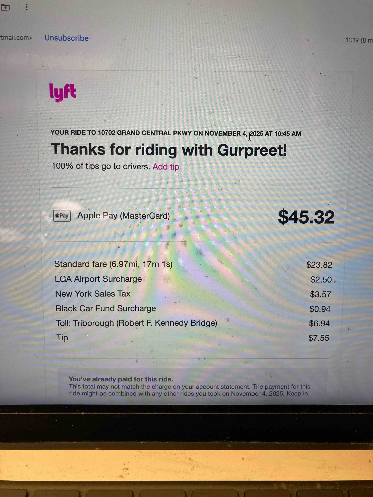
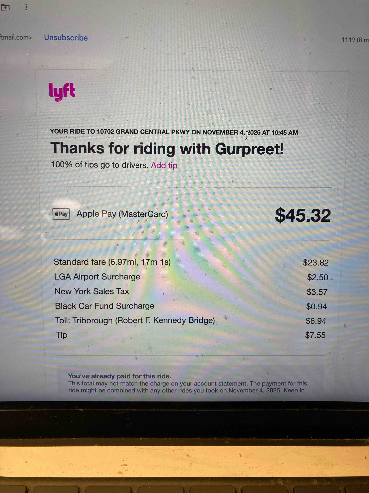

November 9th, 2025
Here is a speech I wrote in my second year of Deep Springs. I think about it a lot.
I cannot figure out an elevator pitch. I give up.
In term 2 Declan and I climbed up to the Druid, and then we went a bit farther. I now always go a bit farther. I increasingly think that it’s hilarious, and sort of telling, that the normal hike is the druid. Upon reaching the druid you get a good look at our valley, and a good look at a big protruding rock, and a sort of vague idea about what’s outside of our valley. It’s a place to contemplate being in this valley, not to fantasize about escaping to the next valley over.
In term 2 neither Declan nor I were really in the right headspace to contemplate being in this valley, so we kept walking. If you walk a mile or two further you cross the Inyo range and you begin to descend into Eureka.
Here’s a secret (sort of):
Past the druid, if you climb up the hill in a straight line from the druid and follow the ridge of that hill you will eventually almost fall into an old mine. It’s about 30 feet deep and has the beginning of a collapsed tunnel at the bottom. I think I’ve only showed Declan. I recommend looking at it.
Declan and I walked past the mine and climbed to my favorite rock and sat there a while. Declan smoked a cigarette. I made a comment about people who could laugh at a family funeral. It was very windy that day. The wind was so strong it hurt to look at the sand dunes. We turned around and walked back.
I’ve heard stories that the whole valley is covered in abandoned mines. Tim Winkler showed me one he found while 4 wheeling near chocolate mountain term 1. He drove me up there so I would know how to climb chocolate mountain with the first years. Recently I’ve been fantasizing about a third year where I catalogue all the old mines — but that’s just the ramblings of an old man.
I’ve felt this stupid compulsion to tell y’all this story. I don’t think it has any meaning.
Here’s another one. In Turkey my parents went to a Hammam without me, and I wandered around the Grand Bazaar. In the middle of the Grand Bazaar is this room full of things worth something. Everything else sold in the grand bazaar is one degree removed from trash – meant to be bought in a currency who’s exchange rate makes buying things fun and thrown out when it can’t fit into your suitcase. This middle room is different.
It is a large square, maybe 500 by 500 feet, and it is clearly about a 1000 years older than the rest of the market. It is subdivided into little claustrophobic rooms full of antiques and old men smoking and talking and very few people trying to buy anything. I saw a silver cigarette case with an engraving of a naked woman and the soviet flag and I asked the man how much it was and he laughed at me and refused to answer. I asked again. He laughed again. I asked again. He told me it was 750 USD. He then specified that it wasn’t Turkish lira, it was usd. I of course did not have 750 USD, so I walked away. The man laughed as I walked away.
I vowed to myself that one day I would be rich. I just gave up on all life of service dreams immediately. One day I will come back with my pockets full of many 750 USD and I will buy every cigarette case, watch, and tiny ebony statue that that man had.


 
